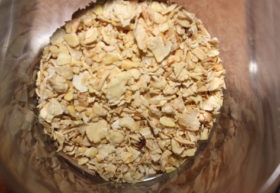

Шрот соевый

Шрот соевый - один из наиболее ценных ингредиентов растительного
происхождения
для кормления сельскохозяйственных животных, птицы и рыбы. Это высокобелковый вид шрота,
получаемый в результате экстракции масла из соевых бобов и содержащий широкий
сбалансированный
набор минеральных веществ и аминокислот, таких как кальций, фосфор, железо и др.
Шрот сои имеет большую концентрацию протеина, чем исходное зерно сои. Он прекрасно усваивается, по
своей биологической ценности близок к белкам животного происхождения, отличается высоким содержанием
легкоперевариваемого белка и его полноценностью.
Шрот рапсовый
Шрот рапсовый - По содержанию незаменимых аминокислот протеин рапсового
шрота приближается к
соевому, поэтому может быть использован в кормлении сельскохозяйственных животных как
белковая добавка. За счет высокого содержания метионина его можно также хорошо комбинировать
с горохом и кормовыми бобами. Кроме того, он содержит столько же клетчатки, как пшеничные
отруби, что делает его интересным компонентом для применения в рецептурах
сельскохозяйственных животных на откорме с низким содержанием клетчатки.
Доказано, что добавление 1 тонны рапсового шрота позволяет сбалансировать по белку 7-8 тонн
зернофуража